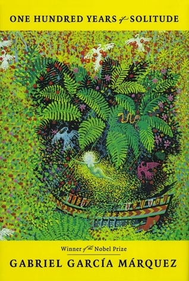

Fahrenheit 451

- "Guy Montag is a fireman. His job is to destroy the most illegal of commodities, the printed book, along with the houses in which they are hidden. Montag never questions the destruction and ruin his actions produce, returning each day to his bland life and wife, Mildred, who spends all day with her television “family.” But when he meets an eccentric young neighbor, Clarisse, who introduces him to a past where people didn’t live in fear and to a present where one sees the world through the ideas in books instead of the mindless chatter of television, Montag begins to question everything he has ever known."
-

-

- 